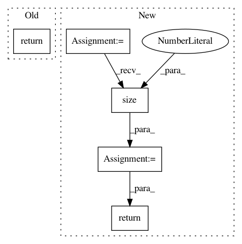

fd55cf8ea1dd674fbe60ade84709fe5666dd9434,pointnet2_ops_lib/pointnet2_ops/pointnet2_utils.py,ThreeInterpolate,backward,#,163
Before Change
grad_out.contiguous(), idx, weight, m
)
return grad_features, None, None
three_interpolate = ThreeInterpolate.apply
After Change
None
idx, weight, features = ctx.saved_tensors
m = features.size(2)
grad_features = _ext.three_interpolate_grad(
grad_out.contiguous(), idx, weight, m
)
return grad_features, torch.zeros_like(idx), torch.zeros_like(weight)
three_interpolate = ThreeInterpolate.apply
In pattern: SUPERPATTERN
Frequency: 3
Non-data size: 5
Instances
Project Name: erikwijmans/Pointnet2_PyTorch
Commit Name: fd55cf8ea1dd674fbe60ade84709fe5666dd9434
Time: 2020-04-16
Author: etw@gatech.edu
File Name: pointnet2_ops_lib/pointnet2_ops/pointnet2_utils.py
Class Name: ThreeInterpolate
Method Name: backward
Project Name: erikwijmans/Pointnet2_PyTorch
Commit Name: fd55cf8ea1dd674fbe60ade84709fe5666dd9434
Time: 2020-04-16
Author: etw@gatech.edu
File Name: pointnet2_ops_lib/pointnet2_ops/pointnet2_utils.py
Class Name: GroupingOperation
Method Name: backward
Project Name: mariogeiger/se3cnn
Commit Name: 4699c81c3b592fed845ccc3b99637cdd7fc1471f
Time: 2019-07-25
Author: geiger.mario@gmail.com
File Name: se3cnn/point/kernel.py
Class Name: Kernel
Method Name: forward